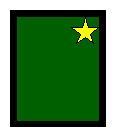
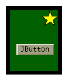
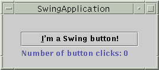
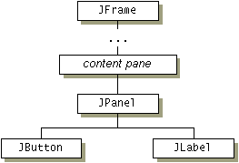

If you plan to create custom painting code for a component, this section is required reading. Understanding the concepts in this section might also help you troubleshoot if Swing components don't seem to be displayed correctly.
When a Swing GUI needs to paint itself — whether for the first time, in response to becoming unhidden, or because it needs to reflect a change in the program's state — it starts with the highest component that needs to be repainted and works its way down the containment hierarchy. This process is orchestrated by the AWT painting system, and made more efficient and smooth by the Swing repaint manager and double-buffering code.Swing components generally repaint themselves whenever necessary. When you invoke the
setTextmethod on a component, for example, the component automatically repaints itself and, if appropriate, resizes itself. Behind the scenes, when a visible property changes therepaintmethod is invoked on the component to request that it be scheduled for painting. If the component's size or position also needs to change, a call torevalidateprecedes the one torepaint. Therepaintandrevalidatemethods are thread safe — they can be invoked from any thread.
Note: Like event-handling code, painting code executes on the event-dispatching thread. While an event is being handled, no painting will occur. Similarly, if a painting operation takes a long time, no events will be handled during that time.Programs should paint only when the painting system tells them to because each occurrence of a component painting itself must execute without interruption. Otherwise, unpredictable results could occur, such as a button being painted as half pressed and half unpressed.
For smoothness, Swing painting is double-buffered by default — performed to an offscreen buffer and then flushed to the screen once finished. You can improve painting performance by making components opaque when possible, so that the Swing painting system doesn't waste time trying to paint behind these components. To make a Swing component opaque, invoke
setOpaque(true)on the component.Although the painting area available to Swing components is always rectangular, non-opaque Swing components can appear to be any shape. A button, for instance, might display itself by painting a filled octagon. The component behind the button (its container, most likely) would then be visible, showing through at the corners of the button's bounds. The button would have to include special hit detection code to avoid acting pressed if the user happens to click its corners.
The painting method you're most likely to override ispaintComponent. It's one of three methods thatJComponentobjects use to paint themselves. The three methods are invoked in this order:
paintComponent— The main method for painting. By default, it first paints the background if the component is opaque. Then it performs any custom painting.paintBorder— Tells the component's border (if any) to paint. Do not invoke or override this method.paintChildren— Tells any components contained by this component to paint themselves. Do not invoke or override this method.
Note: We recommend that you don't override or invoke the method that calls thepaintXxxmethods: thepaintmethod. Although overridingpaintis legitimate in non-Swing components, it's generally not a good thing to do in components that descend fromJComponent. Overridingpaintcan confuse the painting system, which relies on theJComponentimplementation of thepaintmethod for correct painting, performance enhancements, and features such as double buffering.The following figure illustrates the order in which each component that inherits from
JComponentpaints itself. Steps 1 and 2 — painting the background and performing custom painting — are performed by thepaintComponentmethod. Step 3 is performed bypaintBorder, and step 4 is performed bypaintChildren[PENDING: We will change the figures so that green areas in 1 & 2 are a bit bigger -- they should cover the same area as is covered by the black and green areas combined in 3 & 4.]
1. background
(if opaque)2. custom
painting
(if any)3. border
(if any)4. children
(if any)  The standard Swing components delegate their look-and-feel-specific painting to an object called a UI delegate. When such a component's
paintComponentmethod is called, the method asks the UI delegate to paint the component. Generally, the UI delegate first checks whether the component is opaque and, if so, paints the entire background of the component. Then the UI delegate performs any look-and-feel-specific painting. TheJComponentclass doesn't set up a UI delegate — only its subclasses do. This means that if you extendJComponent, your component needs to paint its own background if it's opaque.If you need more information about painting, see Painting in AWT and Swing. It's an article in The Swing Connection that discusses in depth the intricacies of painting.
To illustrate painting, we'll use theSwingApplicationprogram. Here is its GUI: [PENDING: this snapshot will be updated]Here is its containment hierarchy:
 When the GUI for
SwingApplicationis painted, here's what happens:In this way, each component paints itself before any of the components it contains. This ensures that the background of a
- The top-level container,
JFrame, paints itself.- The content pane first paints its background, which is a solid gray rectangle. It then tells the
JPanelto paint itself. In most look and feels, theJPanelis opaque by default and the content pane's background rectangle doesn't actually appear in the finished GUI, being completely obscured by theJPanel.
Note: It's important that the content pane be opaque. Otherwise, messy repaints will result. We could invokesetOpaque(true)on theJPaneland then make it the content pane. This would slightly simplify the containment hierarchy and painting by removing an unnecessary container.
- In most look and feels, the
JPanelis opaque and the first painting it does fills its background. Next, it paints its border. The border is anEmptyBorder, which has no effect except for increasing theJPanel's size by reserving some space at the edge of the panel. Finally, the panel asks its children to paint themselves.- To paint itself, the
JButtonpaints its background rectangle, if necessary, then the text that the button contains, and then its border. If the button has the keyboard focus, meaning that any typing goes directly to the button for processing, the button does some look-and-feel-specific painting to make clear that it has the focus.- To paint itself, the
JLabelpaints its text.JPanel, for example, is visible only where it isn't covered by painting performed by one of the components it contains.
When a transparent (non-opaque) component gets a request to repaint itself, one or more components underneath the transparent component must also repaint themselves. For example, assume you set the text on an ordinary label that's already visible. In most look and feels, the opaque property of labels isfalse, so that labels are transparent. When a transparent label's text changes, not only must the label paint itself, but all components that can be seen behind the label must also paint themselves. This painting frenzy is kicked off when the label'ssetTextmethod invokesrepaint.Here is the sequence of painting when
repaintis invoked on aJComponentsuch as a label that is both visible and non-opaque.You can see from this sequence that painting transparent components is more costly than painting opaque components. That's why we encourage you to set components' opaque property to
- Code inherited from
JComponentcauses the non-opaque component to look through its containment hierarchy to find the closest containing component that's completely opaque. For example, if the transparent component is a label in a transparent panel in a content pane, then the label's closest opaque container is the content pane.- The opaque container paints itself.
- The children of the opaque container are asked to paint themselves. Eventually, the transparent component is painted.
truewhenever practical.